ParaBicychologie
- Accueil >>> Bicyclette A-bike
Bicyclette A-bike. Site officiel : A-bike n'existe plus qu'en version électrique.
Marque : A-bike, marque anglaise, par Sir Clive Sinclair.
Type : Mini bicyclette pliante à roues de 6 pouces ( 15 centimètres ) de diamètre, à pneus, poids total 5,7 kilos ; fabrication chinoise ?
Cliquez les vignettes pour ouvrir les photos en grande taille (s'ouvrent dans une nouvelle fenêtre.)
| 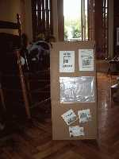 | 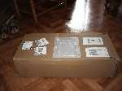 | 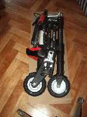 | 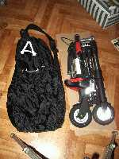 | 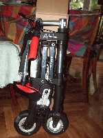 |
| 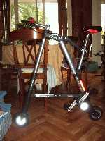 | 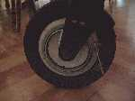 | 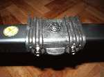 | 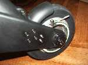 | 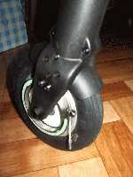 |
| 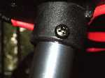 | 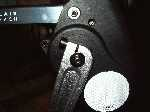 | 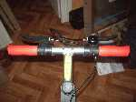 | 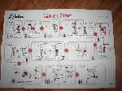 | 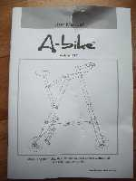 |
Ci-dessous une vidéo de la bicyclette A-bike en circulation et interview du créateur
La vidéo se rapporte à la première version de la bicyclette A-bike.
Source : youtube
Website © Copyright - ef.BicyGonzo.